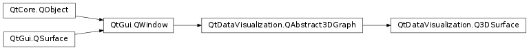

QtDataVisualization.Q3DSurface¶
Synopsis¶
Functions¶
- def
addAxis(axis) - def
addSeries(series) - def
axes() - def
axisX() - def
axisY() - def
axisZ() - def
flipHorizontalGrid() - def
releaseAxis(axis) - def
removeSeries(series) - def
selectedSeries() - def
seriesList() - def
setAxisX(axis) - def
setAxisY(axis) - def
setAxisZ(axis) - def
setFlipHorizontalGrid(flip)
Signals¶
- def
axisXChanged(axis) - def
axisYChanged(axis) - def
axisZChanged(axis) - def
flipHorizontalGridChanged(flip) - def
selectedSeriesChanged(series)
Detailed Description¶
-
class
PySide2.QtDataVisualization.QtDataVisualization.Q3DSurface([format=nullptr[, parent=nullptr]])¶ Parameters: - format –
PySide2.QtGui.QSurfaceFormat - parent –
PySide2.QtGui.QWindow
- format –
-
PySide2.QtDataVisualization.QtDataVisualization.Q3DSurface.addAxis(axis)¶ Parameters: axis – PySide2.QtDataVisualization.QtDataVisualization::QValue3DAxis
-
PySide2.QtDataVisualization.QtDataVisualization.Q3DSurface.addSeries(series)¶ Parameters: series – PySide2.QtDataVisualization.QtDataVisualization::QSurface3DSeries
-
PySide2.QtDataVisualization.QtDataVisualization.Q3DSurface.axes()¶ Return type:
-
PySide2.QtDataVisualization.QtDataVisualization.Q3DSurface.axisX()¶ Return type: PySide2.QtDataVisualization.QtDataVisualization::QValue3DAxis
-
PySide2.QtDataVisualization.QtDataVisualization.Q3DSurface.axisXChanged(axis)¶ Parameters: axis – PySide2.QtDataVisualization.QtDataVisualization::QValue3DAxis
-
PySide2.QtDataVisualization.QtDataVisualization.Q3DSurface.axisY()¶ Return type: PySide2.QtDataVisualization.QtDataVisualization::QValue3DAxis
-
PySide2.QtDataVisualization.QtDataVisualization.Q3DSurface.axisYChanged(axis)¶ Parameters: axis – PySide2.QtDataVisualization.QtDataVisualization::QValue3DAxis
-
PySide2.QtDataVisualization.QtDataVisualization.Q3DSurface.axisZ()¶ Return type: PySide2.QtDataVisualization.QtDataVisualization::QValue3DAxis
-
PySide2.QtDataVisualization.QtDataVisualization.Q3DSurface.axisZChanged(axis)¶ Parameters: axis – PySide2.QtDataVisualization.QtDataVisualization::QValue3DAxis
-
PySide2.QtDataVisualization.QtDataVisualization.Q3DSurface.flipHorizontalGrid()¶ Return type: PySide2.QtCore.bool
-
PySide2.QtDataVisualization.QtDataVisualization.Q3DSurface.flipHorizontalGridChanged(flip)¶ Parameters: flip – PySide2.QtCore.bool
-
PySide2.QtDataVisualization.QtDataVisualization.Q3DSurface.releaseAxis(axis)¶ Parameters: axis – PySide2.QtDataVisualization.QtDataVisualization::QValue3DAxis
-
PySide2.QtDataVisualization.QtDataVisualization.Q3DSurface.removeSeries(series)¶ Parameters: series – PySide2.QtDataVisualization.QtDataVisualization::QSurface3DSeries
-
PySide2.QtDataVisualization.QtDataVisualization.Q3DSurface.selectedSeries()¶ Return type: PySide2.QtDataVisualization.QtDataVisualization::QSurface3DSeries
-
PySide2.QtDataVisualization.QtDataVisualization.Q3DSurface.selectedSeriesChanged(series)¶ Parameters: series – PySide2.QtDataVisualization.QtDataVisualization::QSurface3DSeries
-
PySide2.QtDataVisualization.QtDataVisualization.Q3DSurface.seriesList()¶ Return type:
-
PySide2.QtDataVisualization.QtDataVisualization.Q3DSurface.setAxisX(axis)¶ Parameters: axis – PySide2.QtDataVisualization.QtDataVisualization::QValue3DAxis
-
PySide2.QtDataVisualization.QtDataVisualization.Q3DSurface.setAxisY(axis)¶ Parameters: axis – PySide2.QtDataVisualization.QtDataVisualization::QValue3DAxis
-
PySide2.QtDataVisualization.QtDataVisualization.Q3DSurface.setAxisZ(axis)¶ Parameters: axis – PySide2.QtDataVisualization.QtDataVisualization::QValue3DAxis
-
PySide2.QtDataVisualization.QtDataVisualization.Q3DSurface.setFlipHorizontalGrid(flip)¶ Parameters: flip – PySide2.QtCore.bool
© 2018 The Qt Company Ltd. Documentation contributions included herein are the copyrights of their respective owners. The documentation provided herein is licensed under the terms of the GNU Free Documentation License version 1.3 as published by the Free Software Foundation. Qt and respective logos are trademarks of The Qt Company Ltd. in Finland and/or other countries worldwide. All other trademarks are property of their respective owners.